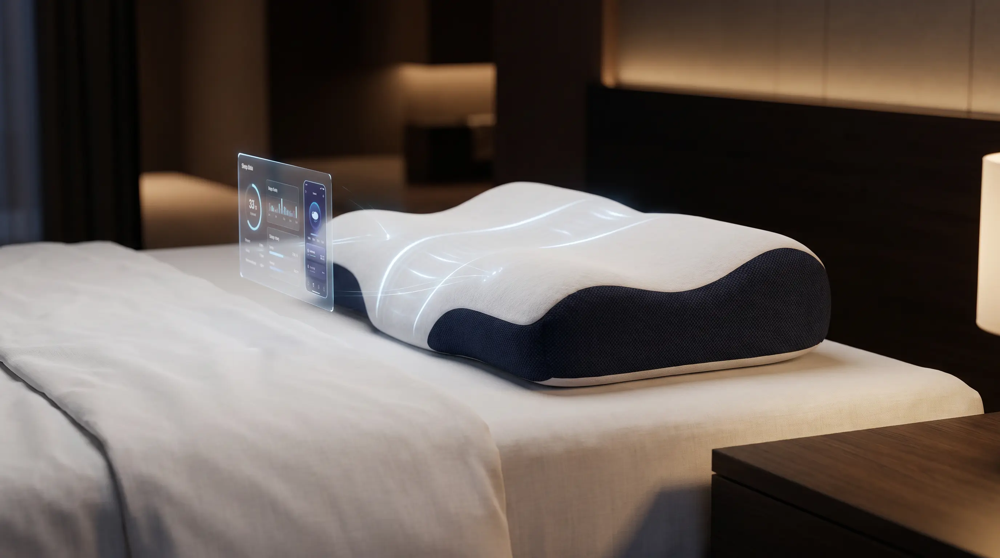
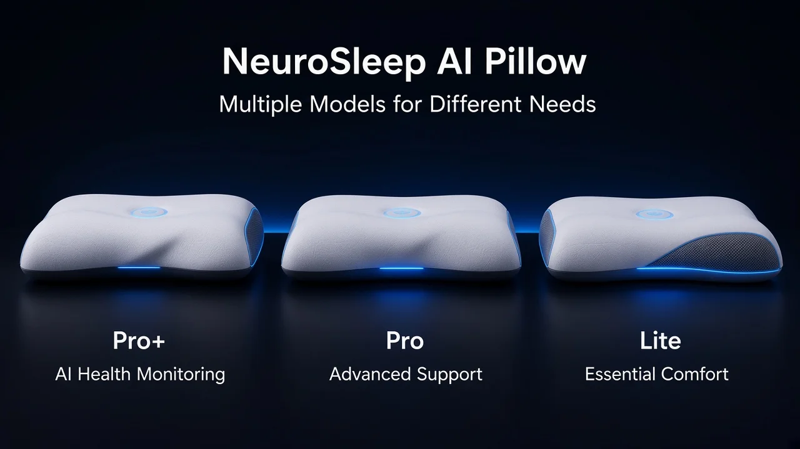
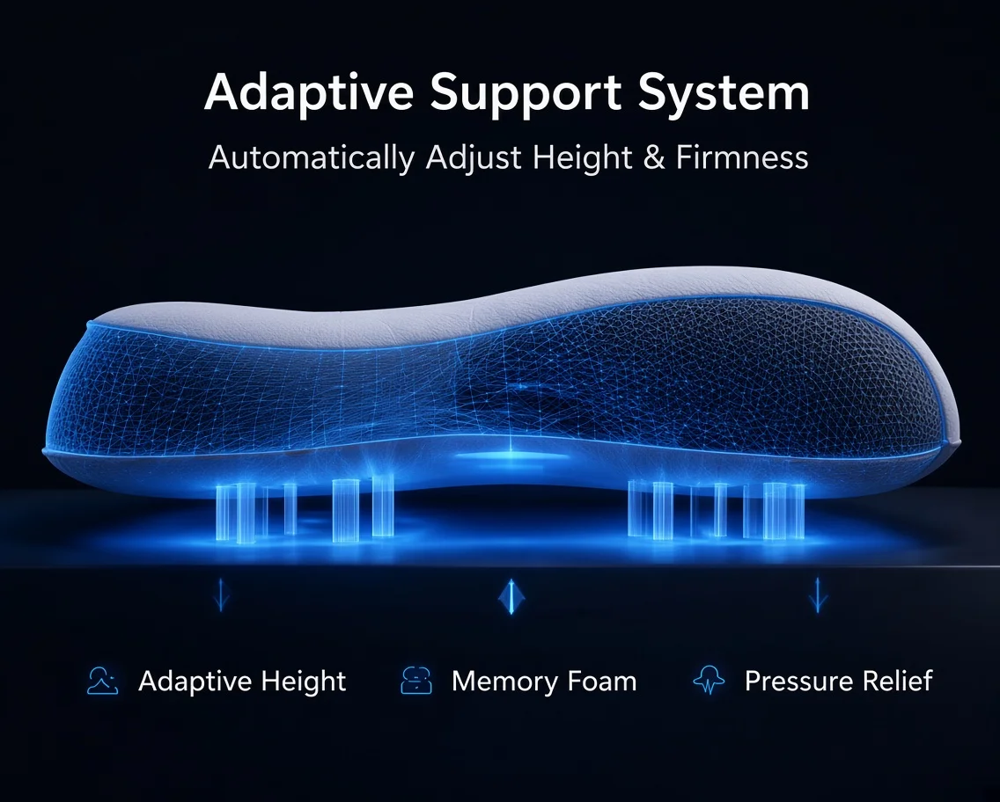
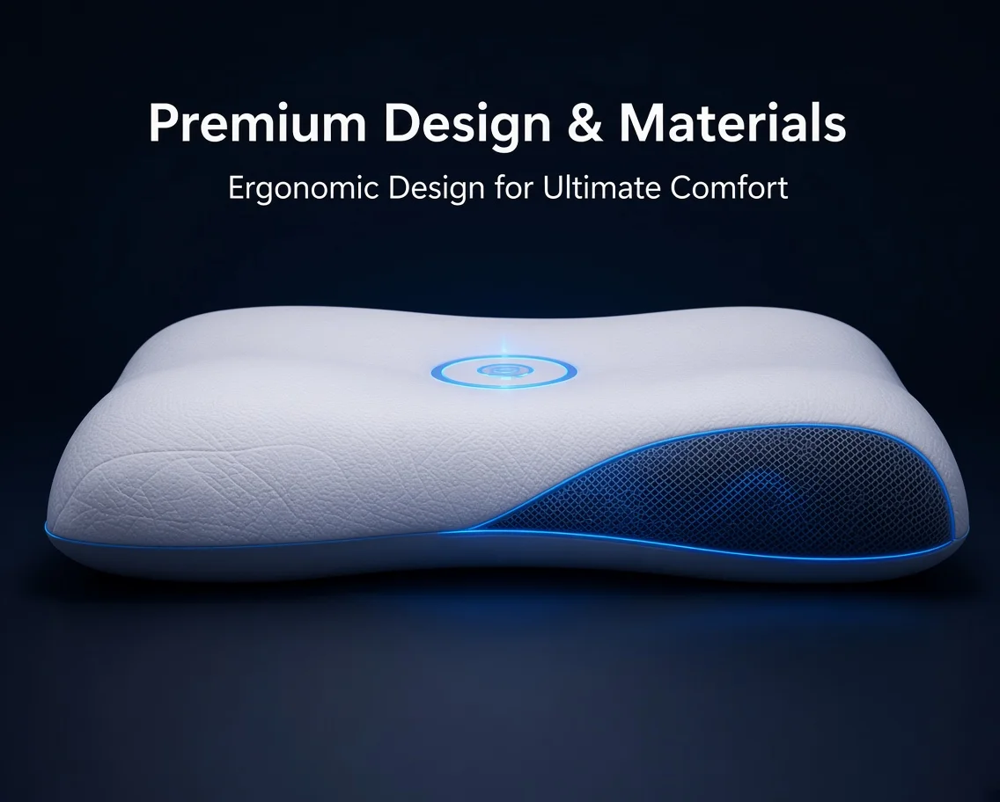

Adaptive sleep.
More thoughtful support.
NeuroSleep explores a future sleep-support system connecting posture-related inputs, adjustable neck support and a connected digital experience. The concept package is being offered primarily for overall transfer to a strategic buyer with the resources to evaluate and develop it.

One concept. Multiple paths to explore.
Explore where an adaptive sleep-support concept might fit. Each application is a hypothesis for technical and commercial evaluation—not a launched or validated product.
Premium guest rooms
Potential focus: intuitive guest controls, cleanable materials and straightforward housekeeping workflows.
Explore opportunity ↗
Personal sleep space
Potential focus: everyday comfort, simple setup, personal preferences and manual control.
Explore opportunity ↗
Dorms & shared living
Potential focus: robust materials, affordable configuration and easy maintenance at scale.
Explore opportunity ↗
Vehicle seating
Potential focus: ergonomic exploration, subject to specialist automotive safety engineering.
Explore opportunity ↗
Portable neck support
Potential focus: light weight, packability, washable materials and comfortable fit.
Explore opportunity ↗
Massage & lounge seating
Potential focus: integration with existing seating, bounded movement and clear stop controls.
Explore opportunity ↗All imagery is illustrative. These use cases are strategic hypotheses; no dedicated versions, market demand or technical feasibility have been validated.
A coherent starting point for a team that can turn a sleep-support hypothesis into an engineered product.
The concept links four intended ideas: adapt, monitor, protect and connect. The physical mechanism, sensing approach, user benefit, feasibility and differentiation still require independent technical and market assessment.
Adapt
Explore adjustable neck support and comfort settings informed by user-controlled or future validated inputs.
Monitor
Consider how a future system could handle sleep-related signals without implying that any real sensor capability exists today.
Protect
Make bounded responses, manual override, safe failure and privacy requirements explicit design questions from the start.
Connect
Map a possible digital companion experience, subject to product design, data protection and validation.
Why acquire the concept instead of starting from a blank page?
These are practical reasons to evaluate the package, not claims of technical advantage or guaranteed time savings.
An assembled narrative and visual direction
A named concept, visual language, website and concept film give an internal team material to discuss, challenge or redesign.
A map of seven possible application paths
Hospitality, home, student living, mobility, travel, relaxation seating and healthcare-related environments are framed as hypotheses for prioritisation—not proven markets.
A demonstrator for discussing decision logic
The browser demo illustrates a transparent rule-based flow and safety gates. It is not trained AI, live telemetry, validated control software or an engineering prototype.
A reviewable starting package
Existing materials may help a buyer structure an internal review. Whether they save time or justify acquisition depends on the buyer’s team, rights review and independent assessment.
See the intended experience.
A visual expression of the project direction. It does not depict a functioning or validated product.
Concept film — visualisation only; not a demonstration of working hardware or measured outcomes.
One idea. Different contexts to test.
Each path is a strategic hypothesis; no dedicated product version has been built or market-validated.
Guest rooms
Cleanability, service workflow, guest controls.
Personal sleep
Ease of use, comfort, maintenance and cost.
Shared accommodation
Durability, bulk servicing, affordable configuration.
Vehicle seating
Ergonomics and strict vehicle-safety constraints.
Portable support
Weight, packability, fit and washable materials.
Massage seating
Integration, bounded movement and safe controls.
Care environments
Only after specialist, regulatory and workflow review.
Choose one to test
Technical feasibility and buyer research must lead.
All seven are strategic hypotheses, not launched products, validated markets or clinical recommendations.
Review all seven pathwaysPotential users, partner types and key validation questions↗
What is available to review?
A transparent summary of current material categories. Scope, ownership and third-party rights remain subject to transaction review.
*The image-file count includes logo and illustrative visuals; it is not a count of unique product designs or protectable intellectual property.
Open the asset inventoryIncluded materials, current limitations and review scope↗Overall project transfer is preferred.
The seller is open to discussing a cash transfer of agreed, transferable concept-stage assets. Any scope, price, exclusivity and rights transfer would require written agreement and verification.
Review acquisition processInitial email
Share a brief company profile, relevant capabilities and intended use or acquisition direction.
Mutual fit and NDA
If appropriate, agree confidentiality terms before any non-public material is shared.
Asset and rights review
Review a detailed inventory, ownership and third-party-rights questions, then discuss written transaction terms.